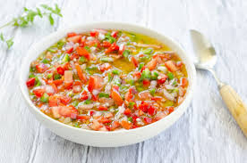

Deportes
Franco Alejandro "Fran" Colapinto is an Argentine racing driver, currently competing in Formula One for Williams. Born and raised in Pilar, Colapinto began competitive kart racing aged nine, winning several regional and national championships.
Música
Para mi el rock es una gran pasion que la siento toda, tambien me gusta la bachata para bailar pegaditos:genial

Tipos de salsas
Criolla:La salsa criolla es un aderezo o salsa tradicional de América Latina que se prepara con una mezcla de vegetales frescos, vinagre y aceite. Es muy popular en Argentina, Uruguay y Perú, y se utiliza para acompañar carnes asadas, empanadas, choripán, pescado, verduras o ensaladas
